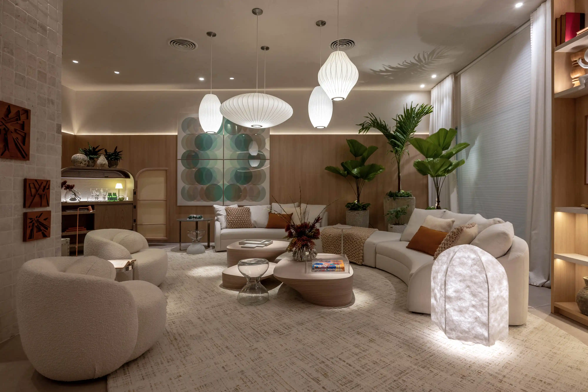

Decoração de Salas

A sala é um dos ambientes mais utilizados da casa. Ela deve oferecer conforto para a família e para os visitantes.
O uso de tapetes, almofadas, cortinas e plantas ajuda a criar um ambiente mais agradável. Além disso, a iluminação adequada valoriza os móveis e amplia visualmente o espaço.
Tons neutros e objetos decorativos simples costumam combinar com diferentes estilos de decoração.